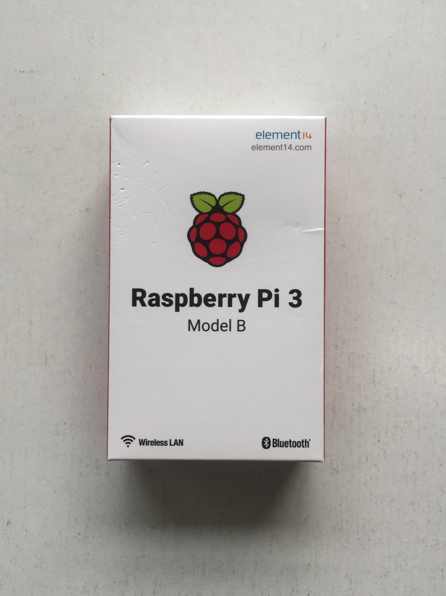
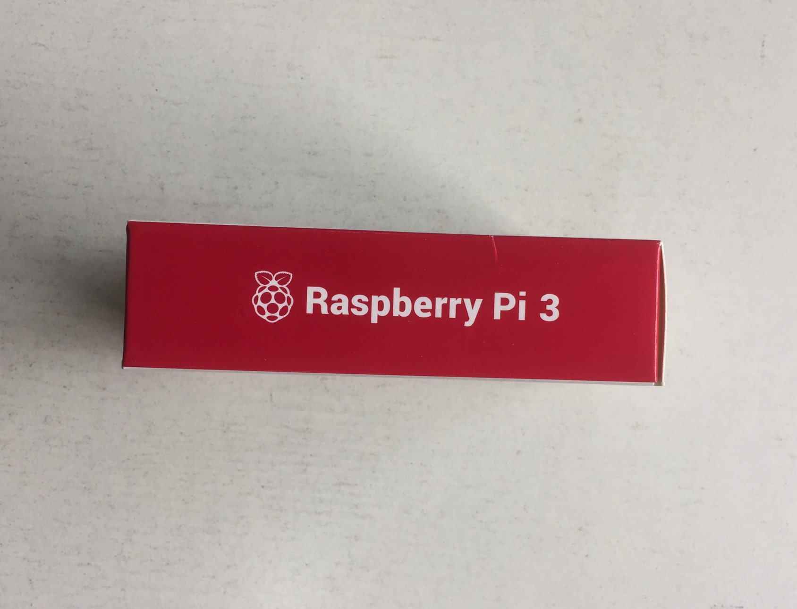
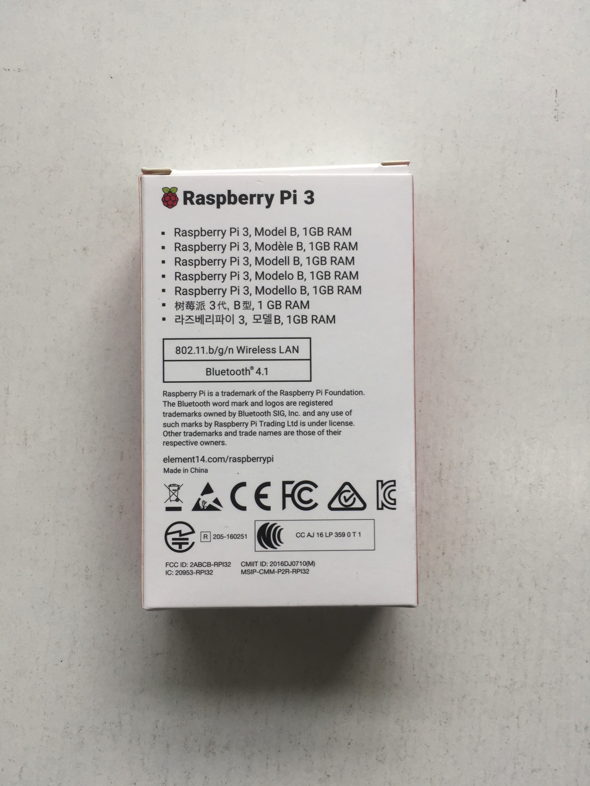
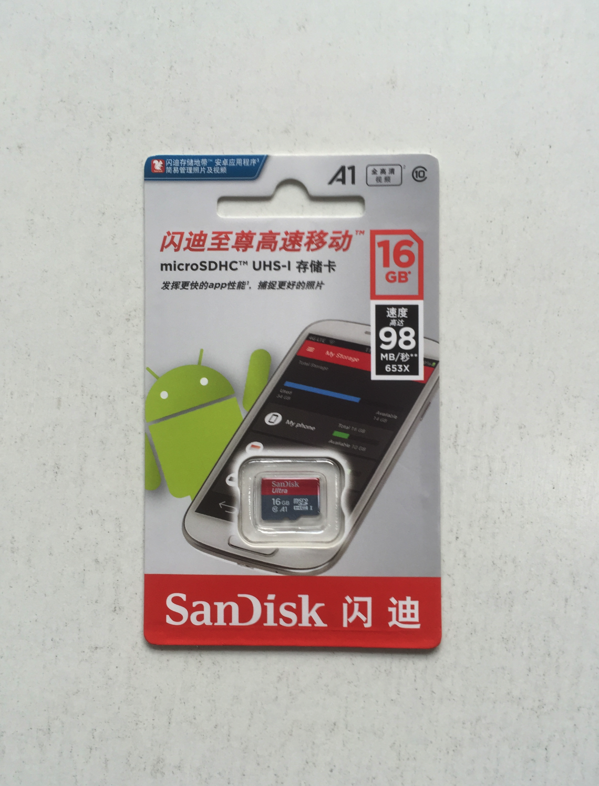
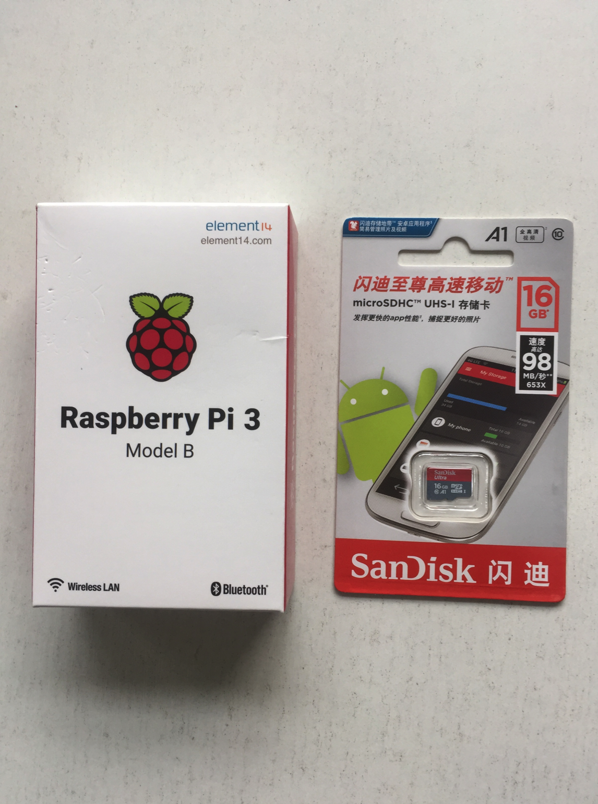
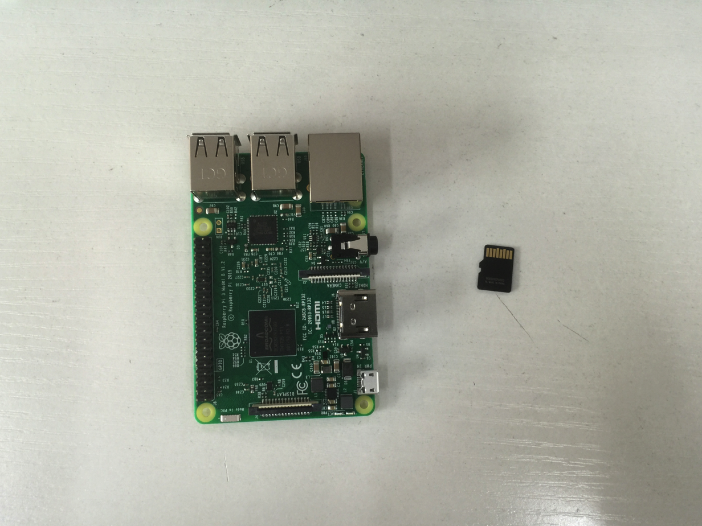

联系方式
1.
树莓派基本操作
1.1.
树莓派-是什么
1.2.
树莓派-能做什么
1.3.
树莓派-怎样做
2.
一步步搭建树莓派
2.1.
树莓派以及SD卡
2.2.
烧录镜像到SD卡(Linux、mac版)
2.3.
烧录镜像到SD卡(Windows版)
2.4.
HDMI链接显示器及开机
2.5.
树莓派基本配置
3.
树莓派基本配置
3.1.
控制LED灯
3.2.
按键控制LED灯
3.3.
控制蜂鸣器
3.4.
控制小车的轮子
3.5.
扫码连接无线网络
3.6.
开机启动
本書使用 GitBook 釋出
Python操作树莓派
树莓派以及SD卡
树莓派



SD卡（建议存储空间至少大于16G）

拆包装的样子

